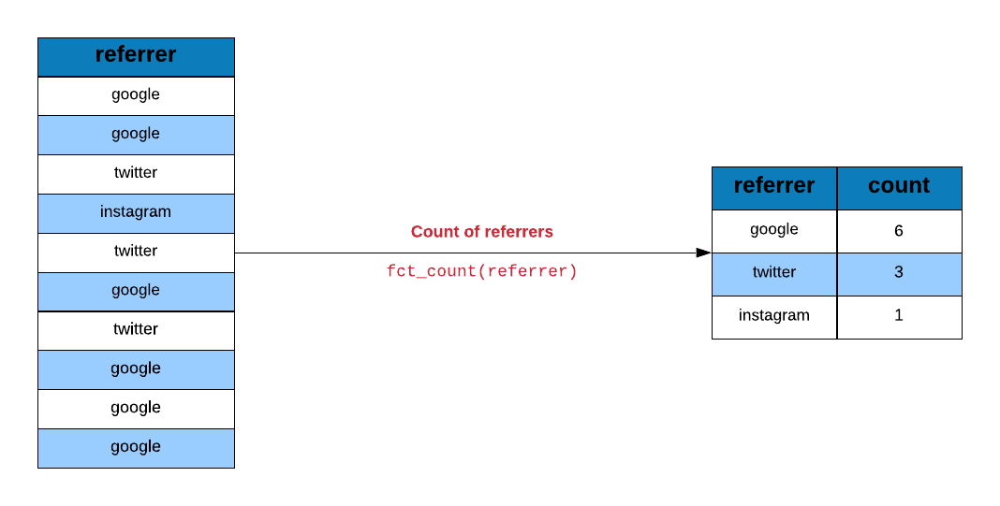
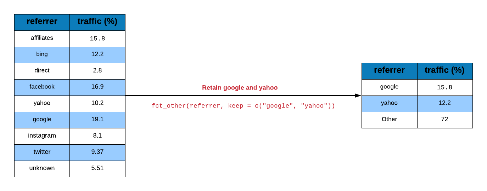
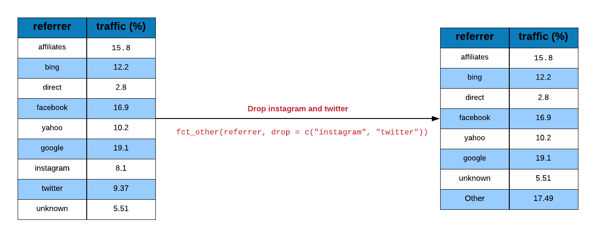
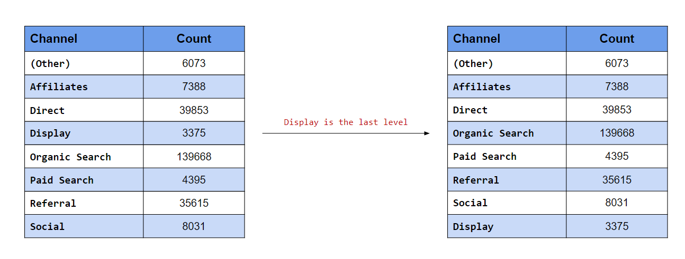

Chapter 10 Categorical Data Analysis
10.1 Introduction
In this chapter, we will learn to work with categorical/qualitative data in R using forcats. We will use the following R packages:
10.2 Case Study
We will use a case study to explore the various features of the forcats package. You can download the data for the case study from here or directly import the data using the readr package. We will do the following in this case study:
- compute the frequency of different referrers
- plot average number of pages browsed for different referrers
- collapse referrers with low sample size into a single group
- club traffic from social media websites into a new category
- group referrers with traffic below a threshold into a single category
10.2.1 Data
ecom <-
read_csv('https://raw.githubusercontent.com/rsquaredacademy/datasets/master/web.csv',
col_types = cols_only(
referrer = col_factor(levels = c("bing", "direct", "social", "yahoo", "google")),
n_pages = col_double(), duration = col_double()
)
)
ecom## # A tibble: 1,000 x 3
## referrer n_pages duration
## <fct> <dbl> <dbl>
## 1 google 1 693
## 2 yahoo 1 459
## 3 direct 1 996
## 4 bing 18 468
## 5 yahoo 1 955
## 6 yahoo 5 135
## 7 yahoo 1 75
## 8 direct 1 908
## 9 bing 19 209
## 10 google 1 208
## # ... with 990 more rowsLet us extract the referrer column from the above data using use_series
and save it in a new variable referrers. Instead of using ecom which is
a tibble, we will use referrers which is a vector. We do this to avoid
extracting the referrer column from the above data in later examples.
10.3 Tabulate Referrers
Let us look at the traffic driven by different referrer types.

## # A tibble: 5 x 2
## f n
## <fct> <int>
## 1 bing 194
## 2 direct 191
## 3 social 200
## 4 yahoo 207
## 5 google 208If you want to sort the output in descending order, use sort and set it to TRUE.
## # A tibble: 5 x 2
## f n
## <fct> <int>
## 1 google 208
## 2 yahoo 207
## 3 social 200
## 4 bing 194
## 5 direct 191Use fct_unique to view the categories or levels of the referrer variable.
## [1] bing direct social yahoo google
## Levels: bing direct social yahoo google10.4 Reorder Referrers
We want to examine the average number of pages visited by each referrer type.
refer_summary <-
ecom %>%
group_by(referrer) %>%
summarise(
page = mean(n_pages),
tos = mean(duration),
n = n()
)## `summarise()` ungrouping (override with `.groups` argument)## # A tibble: 5 x 4
## referrer page tos n
## * <fct> <dbl> <dbl> <int>
## 1 bing 6.13 368. 194
## 2 direct 6.38 358. 191
## 3 social 5.42 355. 200
## 4 yahoo 5.99 336. 207
## 5 google 5.73 360. 208Let us plot the average number of pages visited by each referrer type.
Use fct_reorder to reorder the referrer types by the average number of pages
visited.
10.5 Plot Referrer Frequency (Descending Order)
Since we want to plot the referrers in descending order of frequency, we will
use fct_infreq() to reorder by frequency.

## [1] google yahoo social bing direct
## Levels: google yahoo social bing directNow that we know how to reorder categories/levels by frequency, let us reorder the referrers by frequency and plot them.
10.6 Plot Referrer Frequency (Ascending Order)
Let us look at the categories of the referrer variable.
## [1] bing direct social yahoo google
## Levels: bing direct social yahoo googleSince we want to plot the referrers in ascending order of frequency, we will
use fct_rev() to reverse the order.

## [1] google yahoo social direct bing
## Levels: google yahoo social direct bingLet us reorder the referrers by frequency first and then reverse the order before plotting their frequencies.
10.7 Case Study 2
In this case study, we will learn to:
- combine categories
- recategorize
The data set we will use has just one column traffics i.e. the source
of traffic for a imaginary website.
10.7.1 Data
traffic <-
read_csv('https://raw.githubusercontent.com/rsquaredacademy/datasets/master/web_traffic.csv',
col_types = list(
col_factor(levels = c("affiliates", "bing", "direct", "facebook",
"yahoo", "google", "instagram", "twitter", "unknown")
)
)
)
traffic## # A tibble: 48,232 x 1
## traffics
## <fct>
## 1 google
## 2 google
## 3 google
## 4 google
## 5 google
## 6 google
## 7 google
## 8 google
## 9 google
## 10 google
## # ... with 48,222 more rowsLet us extract the traffics column from the above data using use_series
and save it in a new variable traffics. Instead of using traffic which is
a tibble, we will use traffics which is a vector. We do this to avoid
extracting the traffics column from the above data in all the examples
shown below.
10.8 Tabulate Referrer
Let us compute the traffic driven by different referrers using fct_count.
## # A tibble: 9 x 2
## f n
## <fct> <int>
## 1 affiliates 7641
## 2 bing 5893
## 3 direct 1350
## 4 facebook 8135
## 5 yahoo 4899
## 6 google 9229
## 7 instagram 3907
## 8 twitter 4521
## 9 unknown 265710.9 Collapse Referrer Categories
We want to group some of the referrers into 2 categories:
- social
- search
To group categories/levels, we will use fct_collapse().

traffics %>%
fct_collapse(
social = c("facebook", "twitter", "instagram"),
search = c("google", "bing", "yahoo")
) %>%
fct_count()## # A tibble: 5 x 2
## f n
## <fct> <int>
## 1 affiliates 7641
## 2 search 20021
## 3 direct 1350
## 4 social 16563
## 5 unknown 2657The above result can be achieved using fct_recode() as shown below:

fct_recode(traffics,
search = "bing",
search = "yahoo",
search = "google",
social = "facebook",
social = "twitter",
social = "instagram") %>%
levels()## [1] "affiliates" "search" "direct" "social" "unknown"10.10 Lump Infrequent Referrer Types
Let us group together referrer types that drive low traffic to the website.
Use fct_lump() to lump together categories.

fct_count(traffics)
## # A tibble: 9 x 2
## f n
## <fct> <int>
## 1 affiliates 7641
## 2 bing 5893
## 3 direct 1350
## 4 facebook 8135
## 5 yahoo 4899
## 6 google 9229
## 7 instagram 3907
## 8 twitter 4521
## 9 unknown 2657
traffics %>%
fct_lump() %>%
table()
## .
## affiliates bing facebook yahoo google instagram twitter
## 7641 5893 8135 4899 9229 3907 4521
## unknown Other
## 2657 135010.11 Retain top 3 referrers
We want to retain the top 3 referrers and combine the rest of them into a single category.
## # A tibble: 9 x 2
## f n
## <fct> <int>
## 1 google 9229
## 2 facebook 8135
## 3 affiliates 7641
## 4 bing 5893
## 5 yahoo 4899
## 6 twitter 4521
## 7 instagram 3907
## 8 unknown 2657
## 9 direct 1350Use fct_lump() and set the argument n to 3 indicating we want to
retain top 3 categories and combine the rest.
## .
## affiliates facebook google Other
## 7641 8135 9229 2322710.12 Lump Referrer Types with less than 10% traffic
Let us combine referrers that drive less than 10% traffic to the website.

## # A tibble: 9 x 3
## f n percent
## <fct> <int> <dbl>
## 1 affiliates 7641 15.8
## 2 bing 5893 12.2
## 3 direct 1350 2.8
## 4 facebook 8135 16.9
## 5 yahoo 4899 10.2
## 6 google 9229 19.1
## 7 instagram 3907 8.1
## 8 twitter 4521 9.37
## 9 unknown 2657 5.51Since we are looking at proportion of traffic driven to the website and
not the actual numbers, we use the prop argument and set it to 0.1,
indicating that we want to retain only those categories which have a
proportion of more than 10% and combine the rest.
## .
## affiliates bing facebook yahoo google Other
## 7641 5893 8135 4899 9229 1243510.13 Retain 3 Referrer Types with lowest traffic
What if we want to retain 3 referrers which drive the lowest traffic to the website and combine the rest?
## # A tibble: 9 x 2
## f n
## <fct> <int>
## 1 direct 1350
## 2 unknown 2657
## 3 instagram 3907
## 4 twitter 4521
## 5 yahoo 4899
## 6 bing 5893
## 7 affiliates 7641
## 8 facebook 8135
## 9 google 9229We will still use the n argument but instead of specifying 3, we now specify -3.
## .
## direct instagram unknown Other
## 1350 3907 2657 4031810.14 Retain 3 Referrer Types with less than 10% traffic
Let us see how to retain referrers that drive less than 10 % traffic to the website and combine the rest into a single group.
## # A tibble: 9 x 3
## f n percent
## <fct> <int> <dbl>
## 1 affiliates 7641 15.8
## 2 bing 5893 12.2
## 3 direct 1350 2.8
## 4 facebook 8135 16.9
## 5 yahoo 4899 10.2
## 6 google 9229 19.1
## 7 instagram 3907 8.1
## 8 twitter 4521 9.37
## 9 unknown 2657 5.51Instead of setting prop to 0.1, we will set it to -0.1.
## .
## direct instagram twitter unknown Other
## 1350 3907 4521 2657 3579710.15 Replace Levels

Let us assume we want to retain a couple of important categories and group
the rest into a single category. In the below example, we retain google and
yahoo while grouping the rest as others using fct_other().
## [1] "yahoo" "google" "Other"10.16 Drop Levels

What if you want to drop a couple of categories instead of grouping them?
Use the drop argument in fct_other() and specify the categories to be
dropped. In the below example, we drop the following referrer categories:
## [1] "affiliates" "bing" "direct" "facebook" "yahoo"
## [6] "google" "unknown" "Other"10.17 Reorder Levels
The categories can be reordered using fct_relevel(). In the above example,
we reorder the categories to ensure google appears first. Similarly in
the below example, we reorder the levels to ensure twitter appears first
irrespective of its frequency or order of appearance in the data.

## [1] "twitter" "affiliates" "bing" "direct" "facebook"
## [6] "yahoo" "google" "instagram" "unknown"If the category needs to appear at a particular position, use the after
argument and specify the position after which it should appear. For example,
if google should be the third category, we would specify after = 2 i.e.
google should come after the 2nd position (i.e. third position).

## [1] "affiliates" "bing" "google" "direct" "facebook"
## [6] "yahoo" "instagram" "twitter" "unknown"If the category should appear last, supply the value Inf (infinity) to the
after argument as shown below.

## [1] "affiliates" "bing" "direct" "yahoo" "google"
## [6] "instagram" "twitter" "unknown" "facebook"10.18 Case Study 3
In this case study, we deal with categorical data which is ordered and cyclical. It contains response to an imaginary survey.
10.18.1 Data
response_data <-
read_csv('https://raw.githubusercontent.com/rsquaredacademy/datasets/master/response.csv',
col_types = list(col_factor(levels = c("like", "like somewhat", "neutral",
"dislike somewhat", "dislike"), ordered = TRUE)
)
)Since we will be using only one column from the above data set, let us extract it using
use_series() and save it as responses.
## [1] "like" "like somewhat" "neutral" "dislike somewhat"
## [5] "dislike"10.19 Shift Levels
To shift the levels, we use fct_shift(). Use the n argument to indicate
the direction of the shift. If n is positive, the levels are shifted to
the left else to the right. In the below example, we shift the levels to
the left by 2 positions.

## [1] "neutral" "dislike somewhat" "dislike" "like"
## [5] "like somewhat"To shift the levels to the right, supply a negative value to the n argument
in fct_shift(). In the below example, we shift the levels to the right by
2 positions.
## [1] "dislike somewhat" "dislike" "like" "like somewhat"
## [5] "neutral"